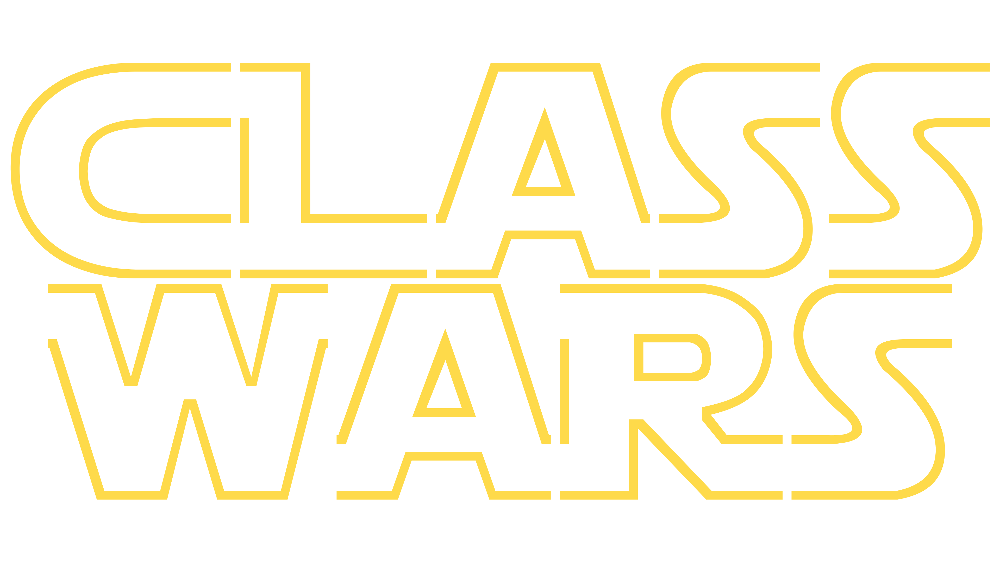

EPISODE CMLXVI
It is a period of assignment war. Student rebels, striking from a hidden base the first row, have won their first victory against the mischievous WebDev Teacher.
During the battle, Rebel spies managed to steal secret plans to the Teacher’s ultimate weapon, the WEB SITE, a combination of text, markup tags, and styling sheets capable of representing a business or providing entertainment or educational services.
Pursued by the Teacher’s sinister agents, Prince Shah races home aboard his starship, custodian of the stolen plans that can save his people and restore freedom to the galaxy…
Fortunately enough, the stolen plans contained all information necessary to win the assignment war. From them the rebels learned about the power of
line
breaks,
the power that the Teacher used to harness the texts that are simply too long.
Changing the text's properties allowed them to create misleading plans to throw the evil spies off the track.
Tables allowed these magnificent people to be
| more | or | less |
| effective. | ||
And, finally, using links, our heroes learned to establish warp tunnels to all sorts of different places.
Do you want to continue with the lightspeed?